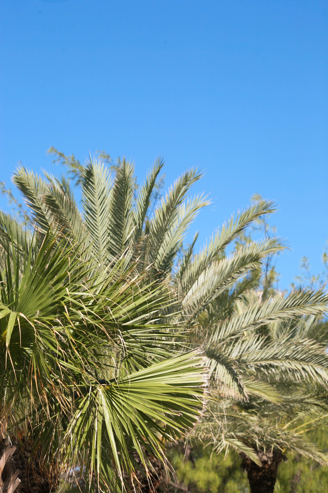

Through the alleyways
to cool off in the shadows,
then into the street
following the water.
There's a bearded man
paddling in his canoe,
looks as if he has
come all the way from the Cayman Islands.
These canals, it seems,
they all go in circles,
places look the same,
and we're the only difference.
The wind is in your hair,
it's covering my view.
I'm holding on to you,
on a bike we've hired until tomorrow.
...
If only they could see,
if only they had been here,
they would understand,
how someone could have chosen
to go the length I've gone,
to spend just one day riding.
Holding on to you,
I never thought it would be this clear.